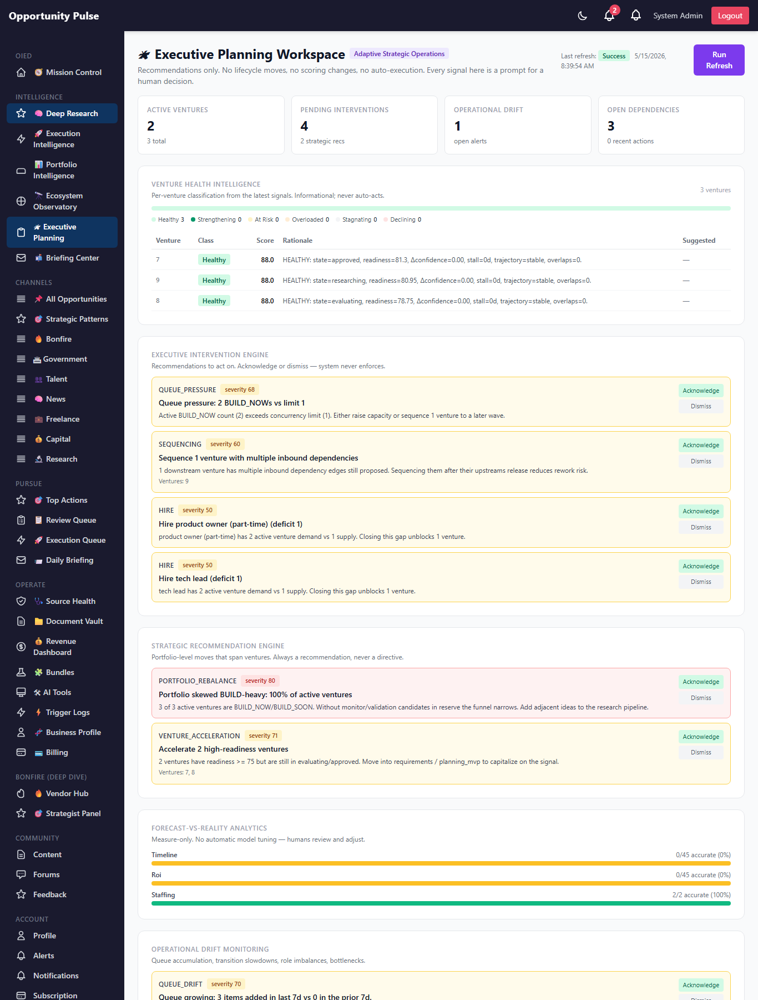
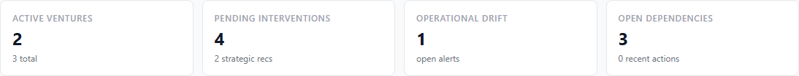
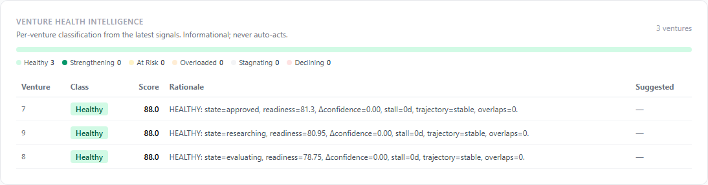
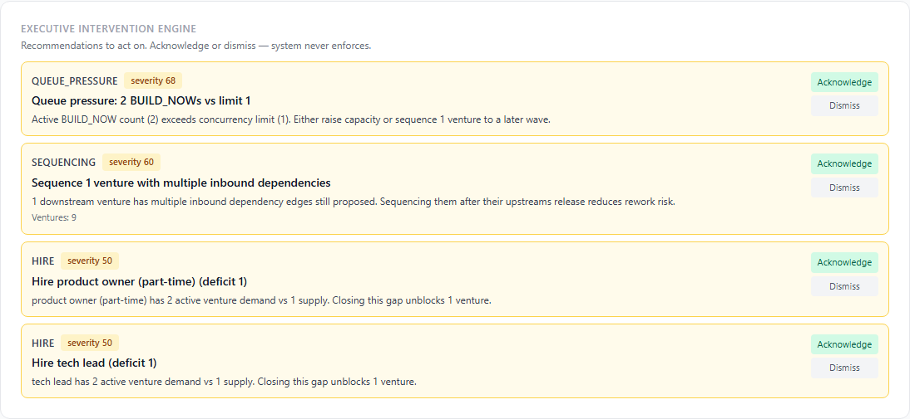
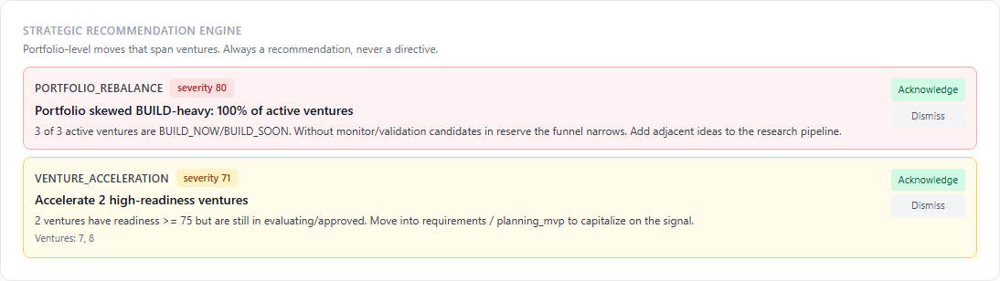
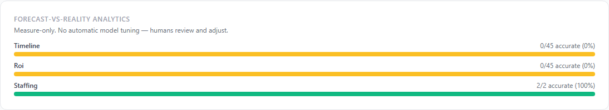
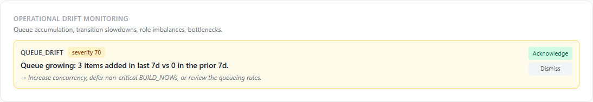
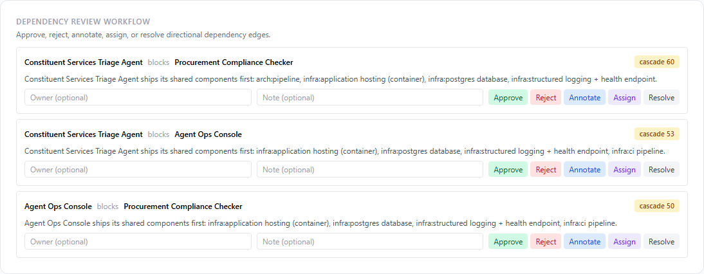
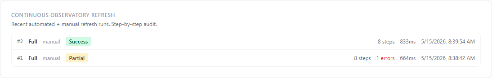
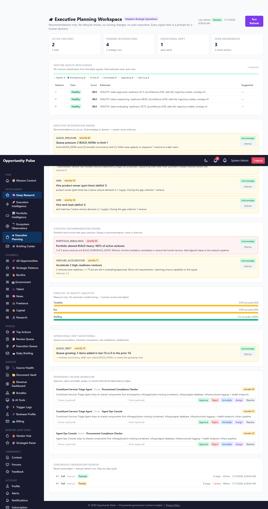

Deep Research Intelligence Engine — Phase 6
Adaptive Strategic Operations · 2026-05-15 · commit 70897fd · all 1,828 backend tests passing
Phase 5 added temporal awareness. Phase 6 closes the loop: Adaptive Strategic Operations. The portfolio now refreshes itself on a schedule, watches its own health, and surfaces concrete recommendations to the executive — but crucially, it never moves a venture's lifecycle state, never mutates a score, never auto-executes anything. The system observes, measures, and recommends. Humans decide and act.
On the seeded prod run the engine ran a full refresh in ~600ms, classified 3
ventures as healthy, generated 4 executive interventions + 2 strategic recommendations,
identified 1 operational drift signal, and surfaced 3 directional dependency edges awaiting
review. All recommendations carry typed metadata so a future analyst can audit the math.
8 tables live 10 services 43 new tests 1828 / 1828 passing Recommend-only Human-in-the-loop Deterministic + explainable
Governance Contract — what this phase is allowed to do, and what it is NOT
The engines are ALLOWED to
- Read every Phase 1-5 persisted analytic.
- Run on a schedule (opt-in via
DEEP_RESEARCH_ADAPTIVE_REFRESH_ENABLED=true). - Persist recommendations, health classifications, drift signals, forecast comparisons, refresh runs and step audit rows.
- Update existing pending recommendations with refreshed metrics so the latest numbers are
reflected (the row's identity stays stable, status stays
pending). - Mark dependency edges as
confirmed/dismissed/resolvedonly when a human explicitly requests an action via the dependency-review workflow.
The engines are NEVER allowed to
- Move a venture between lifecycle states.
- Mutate any score (composite score, readiness score, portfolio score, etc.).
- Auto-tune scoring weights. Forecast-vs-reality is measure-only — humans interpret the data.
- Auto-execute any intervention, recommendation, or drift mitigation.
- Auto-launch a project generation job, an MVP build, or a deployment.
- Skip writing the audit trail. Every refresh persists a run + per-step row.
The governance contract is enforced in code: every service is read-then-recommend; the only
write surfaces are the recommendation, drift, health, accuracy, and run-history tables. No
Phase 6 service imports anything from ventureLifecycle's write path or
from any of the engines that update scores.
Phase 6 objective
Phase 5 surfaced strategic state but left the actual act of looking to a human pressing the Refresh button. Three problems showed up in practice:
- Refresh hygiene: nobody remembers to refresh every day, so a snapshot from a week ago becomes the basis of a today decision.
- Synthesis fatigue: even after a refresh, the executive still has to look at eight panels and synthesize "what should I actually do?" The signals are visible; the recommendations are implicit.
- No closed loop on forecasts: Phase 4/5 made forecasts, but nothing measured whether they were correct. The system had no opinion on its own accuracy.
Phase 6's job is to close all three.
What shipped (10 features)
| # | Feature | Engine | Output |
|---|---|---|---|
| 1 | Automated Safe Refresh Framework | adaptiveRefresh.service.js | cron-driven full + scoped refreshes |
| 2 | Executive Intervention Engine | executiveIntervention.service.js | 6 intervention types |
| 3 | Strategic Recommendation Engine | strategicRecommendation.service.js | 5 portfolio-level types |
| 4 | Adaptive Operational Analytics | adaptiveAnalytics.service.js | composite analytics payload |
| 5 | Venture Health Intelligence | ventureHealth.service.js | 6 health classes per venture |
| 6 | Forecast-vs-Reality Analytics | forecastReality.service.js | 4 forecast kinds × accuracy |
| 7 | Operational Drift Monitoring | operationalDrift.service.js | 5 drift types |
| 8 | Dependency Review Workflow | dependencyReview.service.js | 5 actions on edges |
| 9 | Executive Planning Workspace | planningWorkspace.service.js + page | single dashboard |
| 10 | Continuous Observatory Refresh | refreshHistory.service.js | per-step audit log |
1. Automated Safe Refresh Framework
A node-cron job runs a configurable step-set every night (default 30 3 * * *)
when DEEP_RESEARCH_ADAPTIVE_REFRESH_ENABLED=true. Each step is independently
failable so one bad input doesn't abort the run — the orchestrator captures the error, writes
a refresh_history row, and continues.
The framework supports four run types:
full— every Phase 4/5/6 engine.portfolio— Phase 4 + venture health + recommendations.observatory— Phase 5 observatory + operational drift.decay— confidence decay only (cheap, useful between full runs).
Every run produces one adaptive_refresh_runs row carrying status, duration,
step + error counts, results JSONB, and errors JSONB. Step-level detail lives in
refresh_history so partial failures are auditable.
2. Executive Intervention Engine
Reads the latest resource_capacity_snapshots, ecosystem_metrics,
dependency_edges, and venture_lifecycle_events; emits one of six
typed recommendations:
hire— role deficit > 0 in the latest capacity snapshot.queue_pressure— BUILD_NOW count > concurrency limit.redistribute— staffing skew (max headcount > 1.5× median).venture_pause— ventures stuck >DEEP_RESEARCH_STALL_DAYSdays.sequencing— 2+ inbound proposed dependency edges on one downstream.ecosystem_diversification— one ecosystem ≥ 50% of active ventures.
Each rec carries severity (0-100), title, rationale, supporting metrics (the data points that drove it), and related venture IDs. Recommendations are idempotent — re-runs update the metrics on an existing pending row rather than creating duplicates.
3. Strategic Recommendation Engine
Portfolio-level moves that span ventures. Five types:
portfolio_rebalance— > 70% of active ventures are BUILD_NOW/BUILD_SOON.execution_pacing— last-7d transitions are < 60% of the 30d baseline.infrastructure_consolidation— ≥ 3 ventures share an overlap cluster.venture_acceleration— high-readiness ventures (≥75) still in evaluating/approved.monitoring— > 40% of evaluated ventures have readiness ≤ 40.
4. Adaptive Operational Analytics
Read-only join of every Phase 4/5/6 latest persisted snapshot into one
getAdaptiveAnalytics payload. Surfaces transition flow, readiness distribution,
refresh health, ecosystem concentration with computed fractions, and total/active/archived/monitoring
venture counts. No writes — pure shape-and-join.
5. Venture Health Intelligence
Per-venture health classification from a composite of: lifecycle state, latest readiness,
confidence delta, stall days, trajectory, and overlap-cluster count. Six mutually-exclusive
classes (healthy, strengthening, at_risk,
overloaded, stagnating, declining) with a 0-100
informational score and a suggested intervention string.
Append-only: every refresh writes a new row in venture_health_history, so the
history of a venture's health is queryable over time. The latest-per-venture view is what the
dashboard renders.
6. Forecast-vs-Reality Analytics
Compares old forecast rows against observed reality and classifies each pair as
accurate, optimistic, pessimistic, or
unknown. Four forecast kinds:
readiness— first vs latest readiness score per venture.timeline— predicted breakeven months vs. lifecycle progression.staffing— Phase 5 30-day capacity forecast vs. current snapshot.roi— projected ROI vs. revenue-stage progression (proxy: progressed?).
No automatic model tuning. The accuracy data is for human review of the deterministic scoring weights — the engine itself is never modified.
7. Operational Drift Monitoring
Distinct from Phase 5 strategic drift (ecosystem overcommitment, risk concentration). This is operational: queue accumulation, transition slowdowns, role imbalances, dependency backlog, lifecycle bottlenecks. Five detectors, each comparing rolling-window deltas against a baseline.
8. Dependency Review Workflow
Append-only action log on Phase 5 dependency_edges. Five actions:
approve (→ confirmed), reject (→ dismissed),
annotate (status unchanged, note added),
assign_owner (status unchanged, owner set),
resolve (→ resolved). Every action writes a dependency_reviews row
so the workflow history is auditable.
9. Executive Planning Workspace
The single page that brings every Phase 6 read into one view at
/admin/deep-research/planning. Read-only aggregation; the only writes happen on
explicit user actions (acknowledge, dismiss, dependency-review action, run-refresh).
10. Continuous Observatory Refresh
The adaptive_refresh_runs + refresh_history tables make every
automated run a first-class audit object. The dashboard surfaces the most recent runs with
status pills + duration so operators can see "did the system look at itself today?"
Screen: workspace overview

Header with Run Refresh button, last-run status pill, and the four-up KPI strip.
Screen: top KPIs

Active ventures, pending interventions, operational drift, open dependencies.
Screen: venture health intelligence

Bucket strip (% of ventures per classification) + per-venture table with rationale.
Screen: executive interventions

Color-coded by severity. Acknowledge or dismiss — never auto-applied.
Screen: strategic recommendations

Portfolio-level moves that span ventures.
Screen: forecast-vs-reality

Stacked bars per forecast kind: accurate / optimistic / pessimistic / unknown.
Screen: operational drift

Queue, slowdowns, staffing imbalance, dependency backlog, bottlenecks.
Screen: dependency review workflow

Per-edge: owner + note + 5 action buttons. Every action lands in dependency_reviews.
Screen: continuous refresh history

Status pill + step count + error count + duration per run.
Full planning page

Database schema (Phase 6)
One migration adds eight new tables. Nothing in Phases 1-5 is touched.
| Table | Purpose |
|---|---|
adaptive_refresh_runs | One row per refresh run: type, status, duration, error count, results JSONB. |
refresh_history | Per-step audit log; FK to refresh runs. |
intervention_recommendations | Executive intervention rows with severity, supporting metrics, related venture IDs. |
strategic_recommendations | Portfolio-level recommendation rows (same shape, different scope). |
venture_health_history | Append-only per-venture health classifications over time. |
forecast_accuracy | Predicted-vs-actual rows: kind, scope, delta, classification. |
operational_drift | Operational drift alerts (distinct from Phase 5 strategic drift). |
dependency_reviews | Workflow log on dependency_edges: action, owner, note, actor. |
API routes (Phase 6)
All mounted at /api/v1/deep-research/planning/*, admin-only:
GET /planning— full workspace payload.POST /planning/refresh— manual refresh (body:{ runType }).GET /planning/refresh-runs+GET /planning/refresh-runs/:idGET /planning/analytics,GET /planning/forecast-accuracyGET /planning/interventions+POST .../:id/acknowledge+POST .../:id/dismissGET /planning/strategic-recommendations+ acknowledge/dismissGET /planning/venture-health+GET /planning/venture-health/:id(history)GET /planning/operational-drift+ acknowledge/dismissGET /planning/dependency-review+GET .../:id+POST .../:id/actions
Files changed
Added — backend services (10)
backend/src/deepResearch/adaptiveRefresh.service.jsbackend/src/deepResearch/refreshHistory.service.jsbackend/src/deepResearch/executiveIntervention.service.jsbackend/src/deepResearch/strategicRecommendation.service.jsbackend/src/deepResearch/adaptiveAnalytics.service.jsbackend/src/deepResearch/ventureHealth.service.jsbackend/src/deepResearch/forecastReality.service.jsbackend/src/deepResearch/operationalDrift.service.jsbackend/src/deepResearch/dependencyReview.service.jsbackend/src/deepResearch/planningWorkspace.service.js
Added — models + migration
backend/src/migrations/20260515000003-deep-research-phase-6.jsbackend/src/models/AdaptiveRefreshRun.jsbackend/src/models/RefreshHistory.jsbackend/src/models/InterventionRecommendation.jsbackend/src/models/StrategicRecommendation.jsbackend/src/models/VentureHealthHistory.jsbackend/src/models/ForecastAccuracy.jsbackend/src/models/OperationalDrift.jsbackend/src/models/DependencyReview.js
Added — frontend
frontend/src/pages/ExecutivePlanningPage.jsxfrontend/src/components/deepResearch/PlanningVisuals.jsx
Added — tests + scripts
backend/tests/deepResearch/{adaptiveRefresh,ventureHealth,forecastReality,executiveIntervention,strategicRecommendation,operationalDrift,dependencyReview}.test.jsbackend/scripts/capture-deep-research-phase-6-walkthrough.js
Modified
backend/src/models/index.js— register 8 new modelsbackend/src/deepResearch/deepResearch.controller.js— 18 new handlersbackend/src/deepResearch/deepResearch.routes.js— 18 new routesbackend/src/server.js— opt-in cron scheduler wiringfrontend/src/App.jsx— new/admin/deep-research/planningroutefrontend/src/components/common/Sidebar.jsx— new "Executive Planning" linkfrontend/src/services/deepResearchService.js— 20 new API client functions
Validations
- Unit + integration: 43 new tests added; full suite at 1,828 / 1,828 passing.
- Migration runs clean on prod (
== migrated (0.374s) ==). - All 8 Phase 6 tables exist on prod (verified via
information_schema.tables). - Full refresh on prod returned
status: successwith 0 errors on the second run (the first surfaced a column-name bug — fixed in commit70897fdand re-validated). - Planning workspace endpoint returns valid data: 4 interventions, 2 strategic recs, 3 venture health rows, 1 operational drift, 3 open dependency edges, 2 refresh runs in history.
- 10 screenshots captured from the live prod planning page.
Known limitations
-
Cron is opt-in. The scheduler doesn't start until
DEEP_RESEARCH_ADAPTIVE_REFRESH_ENABLED=trueis set. Default off in prod so that enabling automation is an explicit operator decision. - Idempotency is by (type, title) tuple. If a recommendation's title varies across runs (e.g. "Hire ai/ml engineer (deficit 2)" vs "(deficit 3)") the new variant becomes a separate row. Intentional — the title encodes the magnitude.
-
Health classification is rules-based, not ML. Tunable thresholds via env
(
DEEP_RESEARCH_STALL_DAYS). Phase 7 could add an ML head once enoughventure_health_historyhas accumulated. - Forecast accuracy uses proxies for "actual". True ground truth (e.g. "did this venture actually earn the projected revenue?") would require an external source. The current implementation classifies against lifecycle progression as a stand-in.
- No email digest yet. A natural Phase 7 add: include the top 3 pending interventions in the existing daily briefing.
Recommended Phase 7
- Email briefing integration. Include the top 3 pending interventions + any severity-≥75 operational drift in the existing morning briefing. The briefing template already supports modular sections.
-
Health-trend visualization. Once the
venture_health_historytable has ≥ 30 days of data, render per-venture health sparklines so users can see "this venture has been at_risk for 12 days now." - Forecast-tuning UI. A read-only "calibration" panel that shows the user the forecast vs reality summary AND surfaces a recommended weight adjustment as text — humans copy/paste the new weight into the env. Still no auto-tuning.
- Anthropic fallback provider. Still the highest-leverage unlock for Phase 2/3 AI steps.
- Recommendation outcomes loop. When a human acknowledges + acts on a recommendation, record the outcome (did it work?). Over time, the system surfaces "this intervention type has been historically effective."
- Submission Readiness Engine. A new track: take the proposal-drafting work from idea → ready-to-upload package. Separate from the Deep Research track but reuses the health + recommendation patterns.